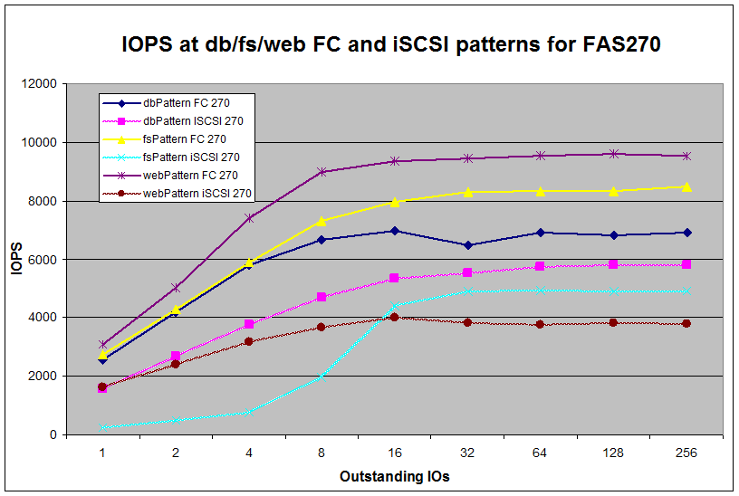

Тестировался FAS270 (одноконтроллерная конфигурация, сегмент “entry level – low enterprise”). Интерфейсы FC и iSCSI.
FAS270 (DataONTAP 7.0.5)
14HDD 72G15K, 1GB RAM Cache
aggr0 RAID-DP 13 HDD (2 parity + 11 data) + 1 Spare
vol1
10 hdd in vol1 (flexvol type)
lun 10GB
no snapshots, 0% reserve
vol1 minra on
Подключался «прямым проводом» в Load Generator (в случае FC – point-to-point 2GB/s, в случае iSCSI – кроссоверный кабель Cat5e 10м)
“Load Generator”: SUN Enterprise 4900 2x SPARC3 1.2GHz 4GB RAM / Solaris10 06/06
FC HBA Emulex LP10000 (driver bundled in Solaris10, v5.21 for MS Windows 2003 Server R2), Software iSCSI initiator (bundled in Solaris10)
Измерения проводились с помощью IOmeter:
IOMeter v.2006.07.27 stable, dynamo compiled for SPARC (gcc 3.4.3), собирался из исходников на Load Generator непосредственно.
Тестировался тремя типами паттернов database pattern, fileserver pattern и webserver pattern.
RAW access: 16777216 sectors (8GiB)
Режим тестирования: 1 Worker, up to 256 Outstanding IOs exponential steps (1,2,4,8…256)
Замерялся лимит по IOPS: 512bytes blocks Sequential Read, up to 256 Outstanding IOs
и MBPS: 1MB blocks Sequential Read, up to 256 Outstanding IOs
Также замерялся тест IOzone по спецификации Alex Roudnev (forum.sql.ru) на блоках 64K и 4K и стандартный "auto" mode.
iozone64 -i 0 -i 1 -i 2 -i 4 -i 5 -i 8 -e -o -c -s 4000M -r 4K -j 1 -f TEST4G4k.log -b /export/home/romx/testlog-NF4g4k.xls
iozone64 -i 0 -i 1 -i 2 -i 4 -i 5 -i 8 -e -o -c -s 4000M -r 64K -j 1 -f TEST4G64k.log -b /export/home/romx/testlog-NF4g64k.xls
iozone64 -a -b /export/home/testlog-NFA.xls
(результаты не обработаны, есть только “raw data”)
testlog-NF4g4k.xls
testlog-NF4g64k.xls
testlog-NFA.xls
testlog-NS4g4k.xls
testlog-NS4g64k.xls
testlog-NSA.xls
Описания использованных паттернов:
|
|
|
|
database pattern |
|||
block size |
% of size |
% read |
% random |
8192 |
100 |
67 |
100 |
|
|
|
|
fileserver pattern |
|||
block size |
% of size |
% read |
% random |
512 |
10 |
80 |
100 |
1024 |
5 |
80 |
100 |
2048 |
5 |
80 |
100 |
4096 |
60 |
80 |
100 |
8192 |
2 |
80 |
100 |
16384 |
4 |
80 |
100 |
32768 |
4 |
80 |
100 |
65535 |
10 |
80 |
100 |
|
|
|
|
webserver pattern |
|||
block size |
% of size |
% read |
% random |
512 |
22 |
100 |
100 |
1024 |
15 |
100 |
100 |
2048 |
8 |
100 |
100 |
4096 |
23 |
100 |
100 |
8192 |
15 |
100 |
100 |
16384 |
2 |
100 |
100 |
32768 |
6 |
100 |
100 |
65535 |
7 |
100 |
100 |
131072 |
1 |
100 |
100 |
524288 |
1 |
100 |
100 |
Результаты:
1. паттерны
IOPS |
dbPattern FC 270 |
dbPattern ISCSI 270 |
fsPattern FC 270 |
fsPattern iSCSI 270 |
webPattern FC 270 |
webPattern iSCSI 270 |
1 |
2573 |
1582 |
2735 |
235 |
3091 |
1636 |
2 |
4207 |
2674 |
4274 |
505 |
5028 |
2401 |
4 |
5812 |
3751 |
5891 |
771 |
7406 |
3189 |
8 |
6670 |
4676 |
7312 |
1987 |
8982 |
3660 |
16 |
6964 |
5350 |
7954 |
4402 |
9335 |
4010 |
32 |
6492 |
5527 |
8309 |
4913 |
9447 |
3821 |
64 |
6900 |
5723 |
8341 |
4926 |
9547 |
3777 |
128 |
6825 |
5813 |
8324 |
4892 |
9588 |
3839 |
256 |
6902 |
5811 |
8468 |
4899 |
9522 |
3804 |
2. максималка
FC maxIOPS |
FC maxMBPS |
iSCSI maxIOPS |
iSCSI maxMBPS |
21810 |
182,2 |
17862 |
70,22 |

Выводы:
Хорошо видно, что производительность FAS270 заметно зависит от характера доступа, достигая максимума примерно на 32-64 Outstanding IOs (до 8 OutIOs имеет линейный прирост).
Разница в производительности для FC и iSCSI в первую очередь определяется недостаточностью мощности процессора контроллера модели FAS270, лимит по производительности достигается в результате 100% загрузки процессора контроллера.
Разница в производительности для FC и iSCSI минимальна в случае database pattern (разница не превышает 15-18% ) и максимальна для web pattern, характеризующегося большим количеством мелких блоков и смесью разных размеров.
Максимум на iSCSI ( тесты iSCSI maxIOPS и iSCSI maxMBPS) достигнут при практически 100% загрузке Load Generator, таким образом теоретический лимит строго говоря не достигнут, будучи ограничен возможностью LG. Для FC максимальные цифры достигнуты при примерно 85-88% процессорной загрузки LG.
Неясной осталась причина странного поведения результатов на fileserver pattern (нетипично медленный рост результатов при увеличении OutIOs)
Остался вопросом использованный размер frame для iSCSI на Solaris. Был ли на тестировании Jumbo Frame или нет понять не удалось (8-). Смена MTU с 1500 на 9000 для интерфейса на результате не отразилась, что необычно (для Windows включение Jumbo Frame увеличило производительность iSCSI прямо таки dramatically).